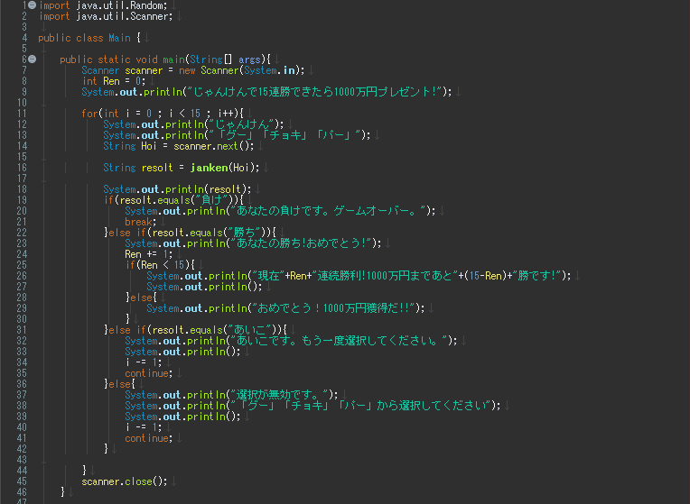
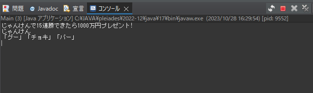
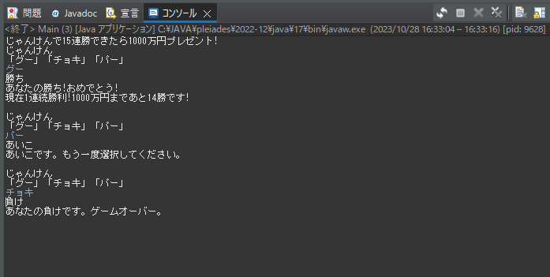

2番目に作成したのはじゃんけんゲームです。
◆環境・・・Eclipse
◆言語・・・Java
◆制作理由・・・単純かつゲームとして成り立つものを作りたかったため
◆作成した時の流れ
1, 某お金配りじゃんけんゲームを自分でも作成できるのではないかと考える。
2, 特徴として「じゃんけん」「連続して勝負」「負けたら終了」「一定数勝ち続けるとクリア」など
大まかなイメージを構想。
3, 自分の出す手を決め、一度決めた後に相手の出す手を決めるようメソッド作成。
4, 続いて作成した2つの出し手を比較して勝ち負けをメインメソッドに返すようにメソッドを分ける。
5, 結果をもとにじゃんけんを続行するかどうかを判断させるよう作成。
作成したソースコードが以下の通りになっています。
じゃんけんゲーム
1, ソースコード
今回は1クラス3メソッド構成して作成しました。
> メインメソッド上記のように作成しました。
始めの文言とじゃんけんそのものをすべてメインメソッドで作成しています。
mainメソッドからjankenメソッドへ自分の出し手を渡し、
じゃんけんメソッドで処理した結果を使ってゲーム続行か終了かを判断し進行していくようになります。
また、出し手とは関係ない文字が入力された場合はやり直すように設定をしてみました。
jankenメソッドではmainメソッドから渡され、
jankenメソッドからenemyHoiメソッドを呼び出し、相手の出し手を決定します。
決定した相手の出し手と自分の出し手を使って
じゃんけん結果を決定しmainメソッドに返すように作成しました。
enemyHoiメソッドではシンプルに呼び出されたら相手の出し手を決めて
呼び出し元のメソッドへ返すよう作成しました。
2, 実行
実行していきます。
出し手は表示された中から指定するように表示して分かりやすくしてみました。
3,実行結果
実際に実行すると上記のように進められます。
負けが表示された時だけちゃんと終了するようになりました。
連勝数を少なくしたらちゃんと勝ち切るところまでは作成することができました。
作成した感想
◆今回の構成、制作には大体5時間程度でした。
また、ゲームを作成するのは構想を練る段階から楽しいと思いました。
◆今回も反省点がいくつかあると感じました。
1, 今回はじゃんけんの結果をswitch文を使用して進めたがもっと別の方法があったと思いました…
→今後別の方法が見つけられるよういつか1から作り直して見ようかと思います。
2, 正常に動くプログラムにはなりましたが、難しすぎて15連勝のクリア結果が出せていないこと…。
3, 変数名が似通っている箇所もあり構想の時点で変数名もちゃんと決めておくようにするべきだと思いました。
◆パスワード生成の時よりも考える時間が長くなっていましたが、
実際コード入力を始めるとパスワード生成より少し長い時間かける程度で完成できました。
また、デバッグにかける時間も結構かかってしまいました。
変数名が間違っていたり、スペル間違えがあったりと、まだまだ注意すべき点があると感じました。